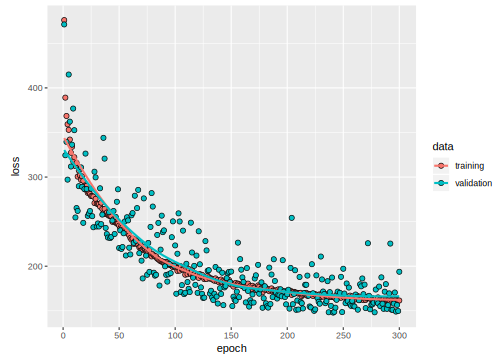

3.1 Uniformly Distributed, Independent Mix, with Exact Features
Let’s define what is meant by uniformly distributed, independent mix, with exact features.
- Uniformly Distributed: each level has the same chance of being drawn as any other level.
- Independent Mix: rating variables are not correlated with one another whatsoever.
- Exact Features: features are drawn from the rate tables so the exact value can be found in the rate table.
This is the simplest dataset to create. We randomly sample a row from each rate table and bind the result all together to create the exposure record. This code generates feature data we can use to rate with.
# Number of records we want to generate.
n_draw <- 10000
ho_rate_tables <- read_rds("ho_rate_tables.Rds")
#Set seed to get consistent results each draw.
set.seed(5555)
# For each table, draw n_draw random numbers.
ho_uniform_iid <-
ho_rate_tables %>%
lapply(
function(x) {
nrow(x) %>%
sample(n_draw, replace = TRUE) %>%
lapply(function(y) x[y, -ncol(x)]) %>% bind_rows}) %>%
bind_cols %>%
cbind(policy_number = 1:nrow(.) %>% str_pad(nchar(n_draw), pad = "0"), .)
ho_uniform_iid %>% as_tibble## # A tibble: 10,000 x 12
## policy_number peril aoi territory protection_class
## <fct> <chr> <dbl> <dbl> <dbl>
## 1 00001 all_~ 140 3 10
## 2 00002 all_~ 125 1 7
## 3 00003 all_~ 80 5 6
## 4 00004 all_~ 290 4 3
## 5 00005 all_~ 290 4 1
## 6 00006 all_~ 170 3 4
## 7 00007 all_~ 230 2 2
## 8 00008 all_~ 290 1 8
## 9 00009 all_~ 140 1 6
## 10 00010 all_~ 95 3 9
## # ... with 9,990 more rows, and 7 more variables:
## # construction_type <chr>, uw_tier <chr>,
## # deductible <dbl>, credit <chr>,
## # jewelry_limit <dbl>, limit_liability_medpay <chr>,
## # form <chr>Next, retrieve the rating factors and apply them according to the rating algorithm steps to generate premium as follows. One thing to mention here. In reality a policy can have multiple credits but this code only randomly draws one from the credit table the way it is setup. This doesn’t take away from our experiment.
# Need to use the formula we already laid out above somehow. This is just to keep going.
ho_uniform_iid_rating <-
ho_rate_tables %>%
lapply(function(x) (x %>% right_join(ho_uniform_iid))$value) %>%
bind_rows %>%
mutate(
premium =
tbl_base *
tbl_aoi *
tbl_territory *
tbl_protection_class *
tbl_uw_tier *
tbl_deductible *
(1 - tbl_credits) +
tbl_jewelry +
tbl_increased_liability +
tbl_expense_fee,
premium = premium %>% round
)## Joining, by = "peril"## Joining, by = "aoi"## Joining, by = "territory"## Joining, by = c("protection_class", "construction_type")## Joining, by = "uw_tier"## Joining, by = "deductible"## Joining, by = "credit"## Joining, by = "jewelry_limit"## Joining, by = "limit_liability_medpay"## Joining, by = "form"# Inpute premium data onto rating data
ho_uniform_iid <-
ho_uniform_iid %>%
cbind(premium = ho_uniform_iid_rating$premium) %>%
mutate_if(is.character, factor)Let’s take a look at the distribution of premiums.
ho_uniform_iid %>%
ggplot +
geom_histogram(aes(x = premium), binwidth = 50, color = "darkorange3", fill = "white") +
xlab("Premium Bin") +
ylab("Number of Training Examples") +
theme_bw()
This is great result. An insurance rating plan uses ratings factors typically generated using loss cost models. Even though we randomly generated a feature set there is a clear transfomation that occurs just by using rating factors selected from generlized linear model.